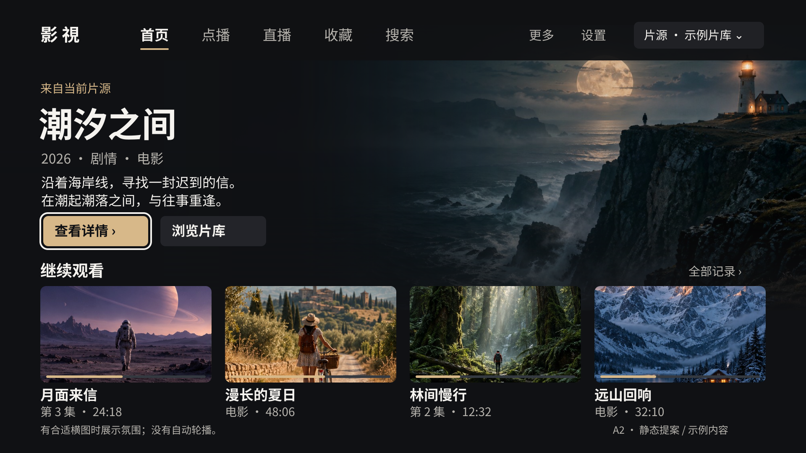
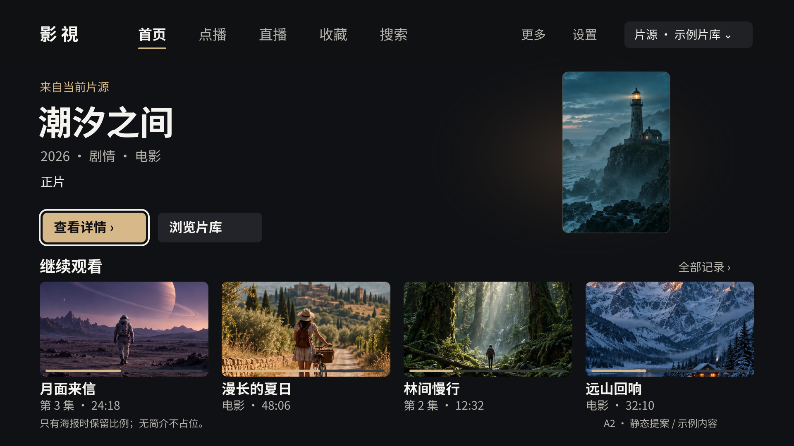
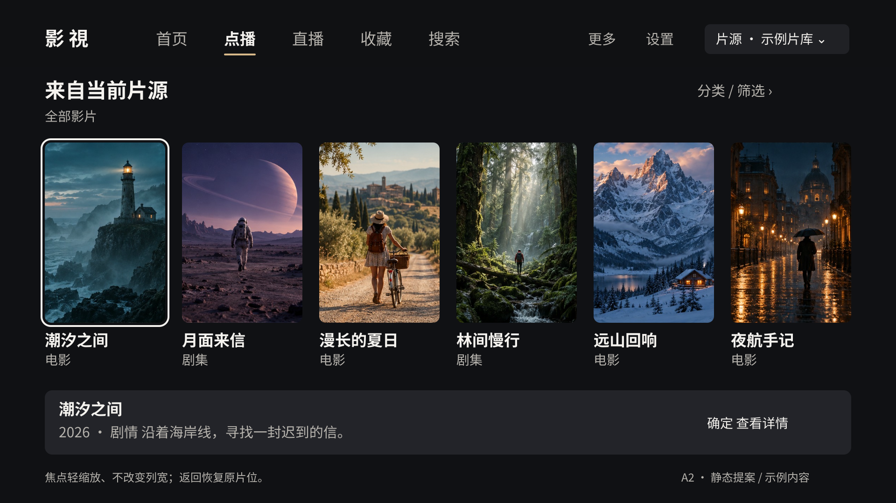
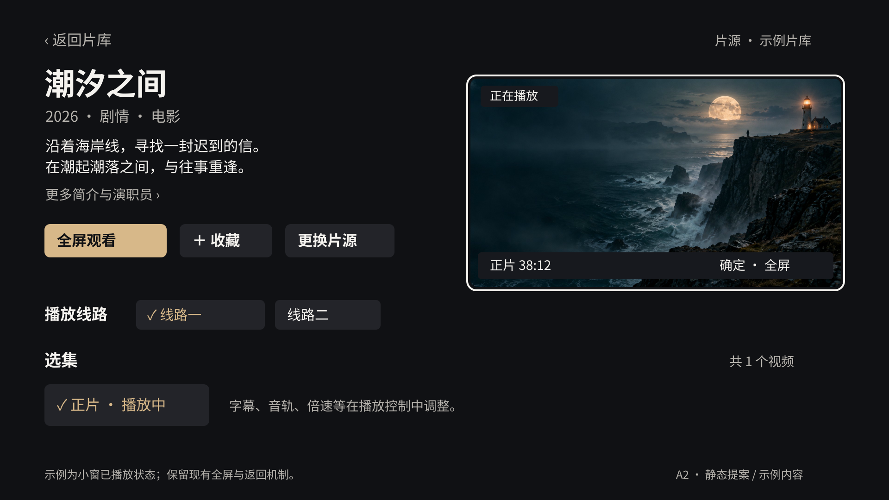
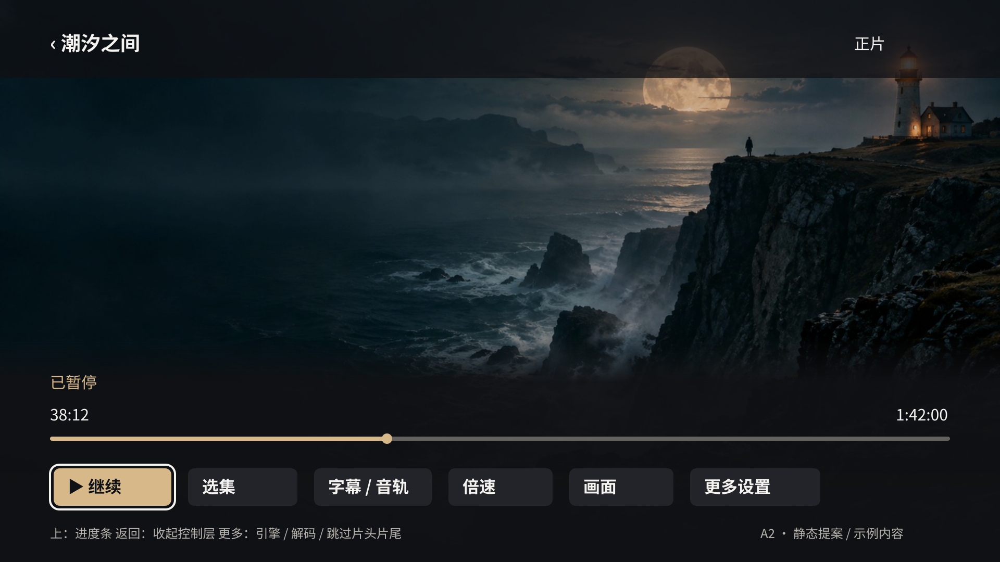

DESIGN RESEARCH / A2 / 待选型，未实施
沿用 A 的炭黑与香槟金，借鉴 Netflix、Prime Video、Apple TV 的可验证设计模式，不复制它们的商业内容体系。
合适横图下的展示。相比 A1，画面融入背景，续播增至四张标准横卡，增加片源与更多入口。

PNG 大图 · 可编辑 SVG
同一套布局的真实能力适配状态，不是另一套配色。没有独立横幅也可以使用；简介缺失不编造。

稳定六列竖海报与下方信息区。不会像示范中的 Netflix 展开卡那样重新分配列宽。

示例为已经开始小窗播放的状态；保持播放器、线路与选集能力，明确全屏入口。

保留常用层，技术项移到更多；示例为暂停状态。

推荐采用 A2 的统一视觉与交互方向，同时保留海报适配状态。待你确认后再制定实施与 Android 真机验收方案。